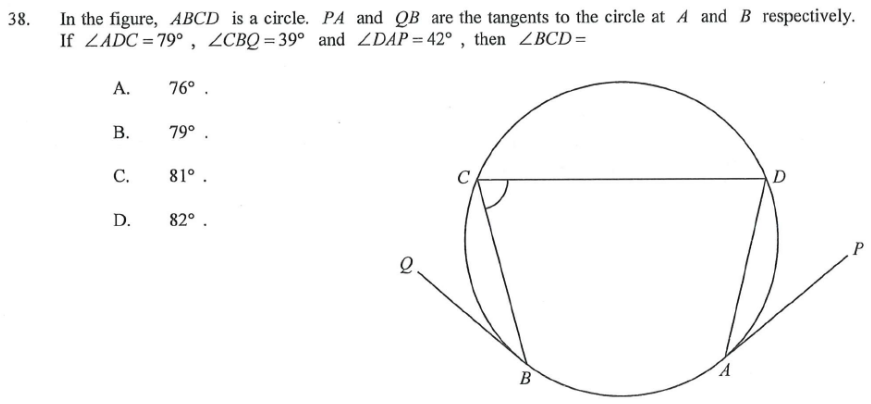

In the figure, $ABCD$ is a circle. $PA$ and $QB$ are the tangents to the circle at $A$ and $B$ respectively.
If $\angle ADC = 79^\circ$, $\angle CBQ = 39^\circ$ and $\angle DAP = 42^\circ$, then $\angle BCD =$
A. $76^\circ$
B. $79^\circ$
C. $81^\circ$
D. $82^\circ$

Figure (original exam diagram)
Key idea: every given angle hides a “tangent–chord” pair, which equals the angle in the alternate segment. Chain the four equalities and add up.
Step 1 · Tangent–chord = alternate segment (39°)
At $B$, the tangent $QB$ and the chord $BD$ satisfy:
$\angle CBD = \angle CBQ$? No — the chord at $B$ that faces the given tangent angle is $BD$.
$\angle BDC = \angle CBQ = 39^\circ$
(∠ in alt. segment — the angle the tangent makes with chord $BC$ equals the angle in the opposite arc.)
Tangent-Chord Angle (Alternate Segment Theorem)\(\text{angle between tangent and chord}=\text{angle in the alternate segment}\)At \(B\) the tangent \(QB\) with chord \(BD\) gives \(\angle BDC=\angle CBQ=39^{\circ}\).
Step 2 · Subtract to find ∠ADB
$\angle ADC$ is the whole angle at $D$, split by chord $BD$:
$\angle ACB$ and $\angle ADB$ stand on the same chord $AB$:
$\angle ACB = \angle ADB = 40^\circ$
(∠s in the same segment.)
Angles in the Same Segment\(\angle ACB=\angle ADB\ \text{(same chord }AB\text{)}\)The \(40^{\circ}\) at \(D\) reappears at \(C\) as \(\angle ACB\).
Step 4 · Tangent–chord at A (42°)
At $A$, the tangent $PA$ and the chord $AD$ give:
$\angle ACD = \angle DAP = 42^\circ$
(∠ in alt. segment — chord $AD$ with tangent $AP$.)
Step 5 · Add the two parts of ∠BCD
$\angle BCD$ is split by chord $AC$ into $\angle ACB + \angle ACD$:
$\angle BCD = 40^\circ + 42^\circ = 82^\circ$
∠ BCD = 82° → Answer D
Why the answer must be 82°: both 40° and 42° come from exact circle theorems, so no approximation is involved. Option D is the only match.
PRACTICESimilar question — try it yourself
Question. In the figure, \(ABCD\) is a circle. \(PA\) and \(QB\) are the tangents to the circle at \(A\) and \(B\) respectively. If \(\angle ADC=84^{\circ}\), \(\angle CBQ=36^{\circ}\) and \(\angle DAP=40^{\circ}\), then \(\angle BCD=\) A. \(84^{\circ}\) B. \(86^{\circ}\) C. \(88^{\circ}\) D. \(90^{\circ}\) [1 mark]
Show the worked solution
Step 1. Tangent-chord angle at \(B\): \(\angle BDC=\angle CBQ=36^{\circ}\).